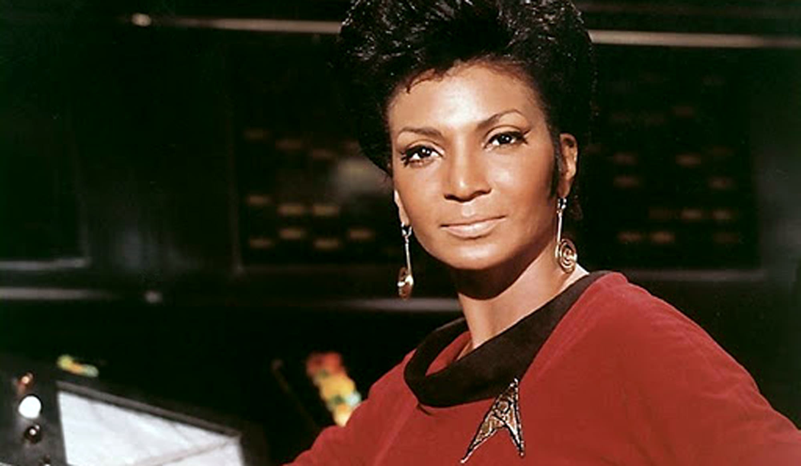
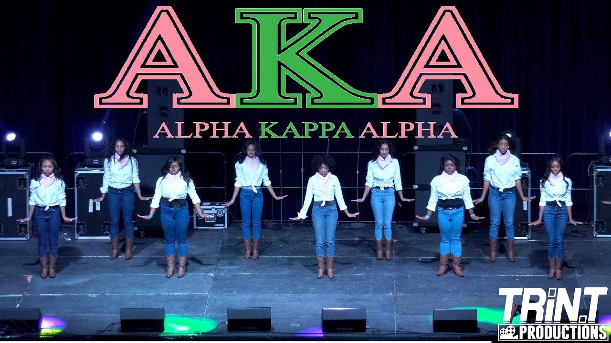

This is a SERIOUS MATTER!

On January 15, 1908, 16 young college women started Alpha Kappa Alpha Sorority, Inc. at Howard University in Washington, DC. Together, they created the mission, colors, symbols and purpose that all members hold near and dear to their hearts. Originally established to encourage high ethical and moral standards, create lifelong friendships, be a network of support for college women of equal talent and strength, and most important, to be of service to all mankind. More than a century later, led by the spirit of the founders, we continue on the path of sisterhood and service.

Alpha Kappa Alpha, Sorority, Inc. is often recognized by its official colors, Salmon Pink and Apple Green or the official symbols: the ivy leaf, the pink tea rose and pearls (20 to be exact). However, members of the sorority embrace pearls in any number and all combinations of pink and green, from blush to fuchsia and lime to forest.
Working, striving, and continuing to make history, in January and March 2017, Alpha Kappa Alpha became the first known sorority to trademark both their call, "Skee Wee"® (US Reg.5,116,853) and their hand sign, "the pinky"®(US Reg.5,153,550) with the US Patent and Trademark Office.

During its 111 year existence, Alpha Kappa Alpha initiated or extended membership to over 300,000 women. Current active membership is over 75,000 college women or graduates spread across the United States with chapters in 42 out of 50 states and several foreign countries. Divided into 9 regions by geography, active members gather annually at their Regional Conference and biennially at the National Conference to discuss current business and any pending changes to the governing bylaws.
As mentioned before, most members of Alpha Kappa Alpha Sorority, Inc. were initiated in college or shortly after college graduation. However, there is a category of honorary membership for trendsetting women who positively impact the lives of their communities in a manner that is consistent with the principles and mission of the sorority. Some of those members include Eleanor Roosevelt, Alicia Keys, Mae Jemison, Nichelle Nichols, Maya Angelou, Ava Duvernay, and Rosa Parks.

Before they were known to the world, they were young women trailblazing their way through college striving to be the best. Women like Sen. Kamala Harris, Katherine Gobel Johnson (Hidden Figures), Phylicia Rashad, Wanda Sykes, and Sonia Sanchez.


Alpha Kappa Alpha Sorority, Inc. and its members have been prominently featured in movies and television shows such as "Stomp The Yard", "Different World", any show that features a college or regional step show and unfortunately on VH1's "Sorority Sisters" which was thankfully canceled very early in its first season.
This is a SERIOUS MATTER!, is the signature performance of Alpha Kappa Alpha members. Known as the "pretty girls", Serious Matter is usually the routine that allows members to rest and take a breath while still stepping and being pretty.
If they make it in pink and green, the women of Alpha Kappa Alpha will buy it; which amounts to millions of dollars in revenue. The economic prowess and impact of Alpha Kappa Alpha Sorority, Inc. are well established. In the corporate world, Mattel®, Coach and Macy's are prime examples of the AKA experience; Mattel® created and sold a commemorative Centennial Barbie for sorority members for a nominal price of $35. Fast forward 10 years later, they are available on eBay for $300 and more. City governments also get excited when hosting an AKA Sorority conference. Economic influxes of over $5 million to New Orleans in 2007 after Hurricane Katrina. More recently, the sorority and its members contributed approximately $30 million to the local economy of Houston, TX.